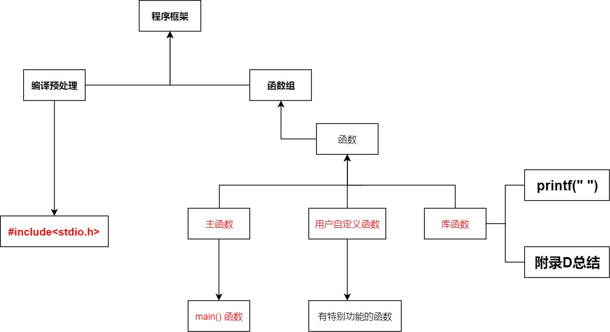
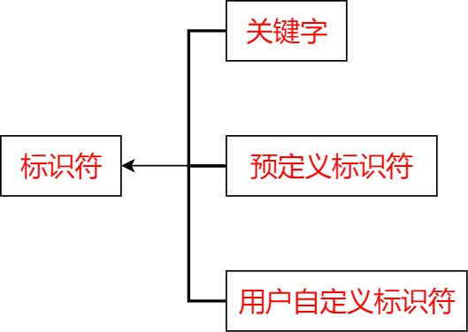
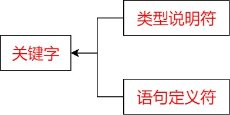
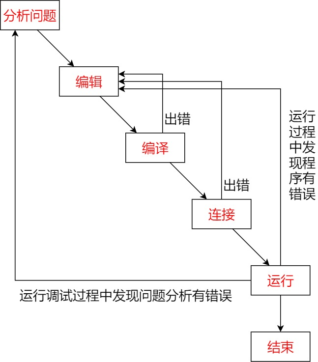
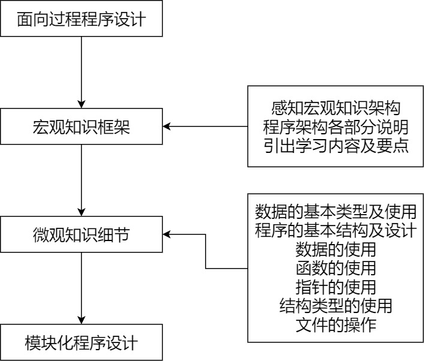

程序设计宏观认识
1.1程序宏观框架结构及构成
1.1.1程序框架的结构
因为有些程序里面会在后面才能讲到，所以，我提前先在前面说明一下会出现的语句作用
void: 声明此结构没有返回值
printf(“ “)：将括号内的字符串显示在Dos框里面
int :声明变量为整数型
retrun：返回一个变量，由结构体前面规定的类型而定
1 |
|
程序框架：编译预处理+函数组
函数组：主函数+库函数+用户自定义函数

编译预处理是程序编译之前的准备工作，以#号开头
函数组：由多个函数构成，共同协作完成程序要实现的功能。(函数组包括主函数+库函数+用户自定义函数）
函数是构成C语言程序的基本单位。
主函数：整个程序的执行从主函数开始，以主函数为核心展开。
函数组中必须包括一个main()主函数，且C语言程序中有且仅有一个主函数。
主函数只能被标识为main()。
注释：为了增加代码的可读性，容易让人理解，会在函数体和语句后面添加一些注释。
使用//进行单行注释，被注释的部分不会被编辑器识别当作程序运行。
在Visual C++ 6.0里面可以使用 “ /× “ 和 “ ×/ “进行单号或者多行注释
主函数通过数据准备、数据输入、数据计算、输出结果等语句实现了题目要求
随堂练习1-1：
1 |
|
这里要注意一下，printf(“”)中变量不需要加&，在scanf()中变量需要加&。因为printf不改变变量的值，只是引用他的值，但是scanf需要修改他的值。
用户输入的时候要注意，有三种间隔符：空格、回车、TAB占位。
1.1.2程序的构成

标识符：程序体中出现了一系列代码，比如length、weight等一系列符号构成了我程序中的语句和函数，这些都被成为标识符。
标识符被分为三类，关键字、预定义标识符、用户自定义标识符
关键字：

类型说明符：用来说明变量、函数的类型，如int、float、char、void等
语句定义符： 用来表示一个语句的功能，如if、for、while、return等
预定义标识符：
C语言系统中预先定义好的，比如库函数的函数名printf、scanf等。
（这里容易混的就是，printf(“ “)在被理解为一个库函数发挥作用的。而这里被当成预定义标识符的是printf(“ “)函数的函数名。）
用户自定义标识符:
在编写程序的过程中，需要对特殊的变量、常量、函数、类型与数组起名字，这就是用户自定义标识符。
所有的用户标识符必须先定义或说明后再使用
用户自定义标识符的命名规则：
1.只能由字母（A-Z,a-z）、数字（0-9）、下划线 _ 组成。
2.首字符不能为数字
3.C语言对于大小写字符敏感，Main和main不一样，前者可以当作用户自定义标识符使用，而后者却不能。
4.绝对不可以把关键字当作用户自定义标识符
5.使用预定义标识符来当作用户自定义标识符会使其失去原有的意义，甚至造成二义性。通常不建议使用，但是可以使用
6.用户自定义标识符命名时应该简单明了：命名方法目前很常见的有驼峰命名法、帕斯卡命名法、匈牙利命名法（我自己通常喜欢用驼峰）
命名方法详解
函数和语句
前面学到了，函数是构成C语言的基本单位。而语句则是函数的重要组成元素。
函数的形式结构：
1 | 函数返回值类型 函数名（形式参数） //函数首部 |
第一行：被称为函数首部，以我们的主函数为例void main(),void就是我们的返回值类型，但是void的作用就是声明此函数没有返回值；而main()就是我们的函数名，这也就是为什么主函数只能用main当作函数名。
第二行：以 ’‘{ } ’‘大括号为定界符，里面由若干个语句构成，被称作函数体。
说明语句：可以实现对数据的描述（实际上书上 就这么说的，但是我的理解就是把他当做了注释等）
可执行语句：可以通过编译产生对应的汇编代码和机器码的语句。比如赋值、逻辑运算、算术运算、分支、循环等都可以转化为相应的汇编代码。
以一个最简单的函数来看这个过程：
1 | int a() |
在汇编语言(x86)中是这样的：
1 | a: |
可见return123；就是我们的一个可执行语句
在我们日常编程过程中，为了增强我们程序的可读性，不光可以加注释，还有就是尽量在每一行只写一句代码，每个代码结尾必须加“ ；” 不然会报错
1.2程序开发过程及环境
1.2.1程序开发过程
用C语言编写的程序称为源程序
将源程序转换为计算机能够直接识别的和执行的二进制目标代码称为编译程序
基本的开发过程为：
编译程序：编辑是指修改C语言代码；用visual c++编辑的源程序保存的后缀名为 “.cpp”或” .c “
编译源程序，生成目标程序： 说白了就是计算机不知道你写了个啥，需要个媒介进行翻译一下。
这个过程就是编译源程序 。
连接目标程序及其相关模块，生成可执行程序： 将目标程序转化成为可执行的程序，后缀名为 “.exe”
运行可执行程序： 运行程序，并检查运行结果。

这告诉了如果发生错误，都回到编辑源代码解决
1.2.2程序开发环境
使用Visual C++ 6.0开发应用程序的步骤如图：
软件下载 密码: 96xj
具体的安装步骤就不说了。但是这里要处理一个问题，就是这个软件安装在w10上面报错，需要替这个MSDEV.EXE文件，将它放入visual c++ 6.0安装目录下的bin目录下。
1.3C语言特点及其知识脉络
C语言是世界上最流行、使用最广泛的高级程序设计语言
C语言具有绘图能力强、可移植性、生成的目标代码质量高、程序执行效率搞、数据处理能力强等特点。
C语言程序设计是面向过程的程序设计，其学习过程可以按照图片所示：

20页有两个实操，我一块写了把
3.输出指定字符的这个
1 |
|
4.三个瓶子互换这个
1 |
|
第一章基本结束，日后如果有漏继续补充。